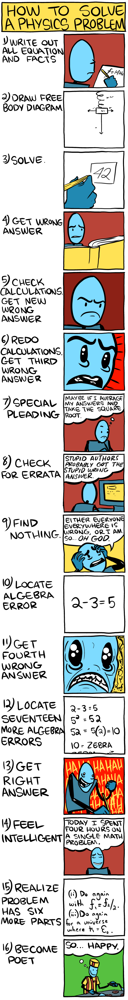

Keith Devlin's Mathematical Thinking looks to be a good introduction to the topic.
Many recommend Knuth's book: Concrete Mathematics, an Introduction to Computer Sciences
Calculus: rbs0 recommends Calculus and Analytic Geometry by Thomas. Others recommend Calculus an Intuitive and Physical Approach and What Is Mathematics?: An Elementary Approach to Ideas and Methods (recommended by Einstein)
Alex recommends reading any of George Polya's books, with How To Solve It and Induction And Analogy In Mathematics and Patterns of Plausible Inference being a few. Also, doing math exercises, he recommends Art of Problem Solving website.
YouTube Link! https://www.youtube.com/watch?v=spUNpyF58BY
To be improved
Most engineers think that math is a rather boring subject, composed of rather trivial things like trigonometry and summing over infinitesimals (aka integrating). Also, most engineers were plagued with the fascination early on of making a robot move, or building their own bench out of wood, or creating mini flash games that could take the world by storm. When you've got something that's “hands on”, all you really need to do is plug n' chug the occasional formula or solve an inequality, right? There's even tools like Wolfram Alpha or your TI-89's that can solve all the ugly stuff you'd ever need to use! Why in the world would you ever need to really know math?
Well, as it turns out, there is a breed of person that got excited at an early age about things like proportions, puzzles, and the simple artistic beauty that math formulas sometimes hold, even graphically! In high school, they're known for tearing into their coursework and learning all they can about integrating and trig subbing, and often try and outdo their classmates in simplifying a problem the furthest! In college and beyond, they're known as mathematicians. They'll spend hours upon end, writing nary a word on their scratch piece of paper, but thinking deep thoughts about edge cases, identities, and elegant ways of making the massive problem they're dealing with a little bit simpler. Mathematicians make the world go round, and their advances in the last 100 years have largely been the reason that society is where it is today!
Turns out that mathematicians think about engineered robots, structures, and computers the same way! You just buy them and use them for their intended purpose, without any regard to the late nights debugging code and long ponderings about the optimum balance between form and function, and cost and completeness (what many an engineer stresses over)
Having a math/physics major as a roommate helped me a lot with learning these things. But honestly, this can be applied to just about any major vs another major in college! So, open your mind and learn from someone different than you!
The ideal future representation for modeling systems won't resemble either analysis or simulation as we know it, but will descend from both.This is exactly the problem: Saturday Morning Breakfast Cereal (SMBC) Physics comic: 
Linear Algebra with Applications is “better” than Introduction to Linear Algebra? Oh well…just time to learn linear algebra, here we go!
Linear algebra proof that matching two sequences using convolution (multiplying them and finding maximum) is the same as minimizing the mean-square error between the sequences.
TO READ STILL
{kind=link}
{kind=link}